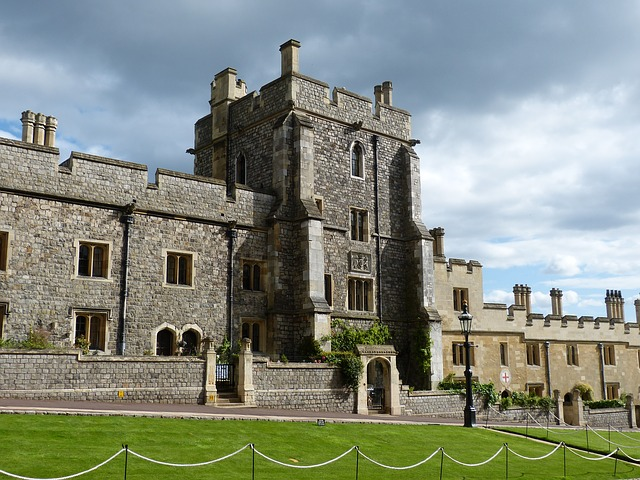
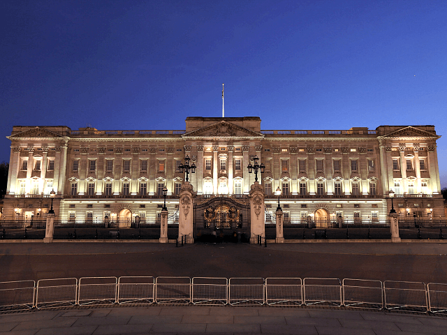
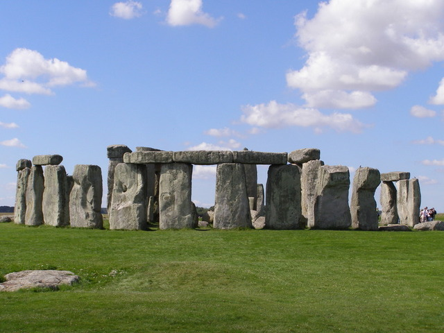
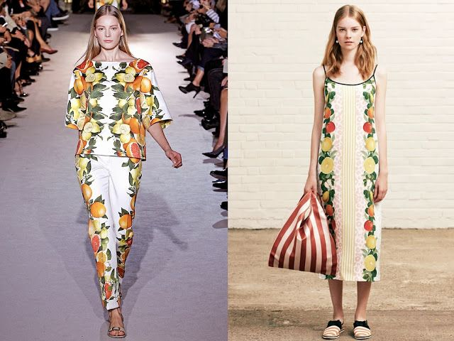

Lifestyle
London is infamous for its large number of interesting attractions and things to do. Due to its diverse community there is alos a busiling fashion scence in london. some popular attractions in london are listed below.
Windsor castle
About
Windsor Castle is the oldest and largest occupied castle in the world. A royal home and fortress for more than 900 years, it remains a working palace to this day.Windsor Castle is in Windsor, around 25 miles (40km) from central London in the county of Berkshire. The town of Windsor is on the banks of the Thames, to the south of Slough and to the west of Heathrow Airport. At the windsor castle you will see the magnificent State Apartments, decorated with some of the finest works of art in the Royal Collection. Spot stunning Van Dyck paintings, works by Rubens and Wedgewood porcelain. Don’t miss Queen Mary's Doll's House – the largest dolls’ house in the world – and St. George's Chapel, where many royal occasions have taken place. Try to time your visit for the Changing the Guard ceremony, it takes place at 11am on select days throughout the year (weather permitting).
London eye

About
Enjoy amazing 360-degree views over London from the London Eye, a rotating observation wheel which is 135 metres (443 ft) high. Spot some of the capital's most iconic landmarks, including Big Ben, the Houses of Parliament and Buckingham Palace. Within each capsule, interactive guides allow you to explore the capital's iconic landmarks in several languages.The gradual rotation in one of the 32 high-tech glass capsules takes approximately 30 minutes and gives you an ever-changing perspective of London. You can skip most of the queues with a fast-track entry ticket.
Buckingham palace
About
Buckingham palace is located in the City of Westminster, the palace is often at the centre of state occasions and royal hospitality. It has been a focal point for the British people at times of national rejoicing and mourning. In 1837, the palace became the London Residence of one of Britain's most famous and longest reigning monarchs, Queen Victoria.Buckingham Palace features 775 rooms. Of these rooms, 188 are staff bedrooms, 92 offices, 78 bathrooms, 52 royal and guest bedrooms, and 19 state rooms. The palace takes its name from the house built (c. 1705) for John Sheffield, duke of Buckingham. It was bought in 1762 by George III for his wife, Queen Charlotte, and became known as the queen's house.
Big ben clock tower

About
Big Ben is the nickname for the Great Bell of the striking clock at the north end of the Palace of Westminster,the name is frequently extended to also refer to the clock and the clock tower. The tower itself was formally known as St. Stephen's Tower until 2012, when it was renamed Elizabeth Tower on the occasion of Elizabeth II's Diamond Jubilee, celebrating 60 years on the British throne. The clock tower is about 96m tall
Stonehenge
About
If you are already planning a trip to london then you might as well visit the iconic stonehenge.Stonehenge is a prehistoric monument on Salisbury Plain in Wiltshire, England, two miles west of Amesbury. It consists of an outer ring of vertical Sarsen standing stones, each around 13 feet high, seven feet wide, and weighing around 25 tons, topped by connecting horizontal lintel stones. This marvelous natural formation is about 90 miles west from central london and is well within a confortable day trip. its definetly worth setting aside a day to visit stonehenge.
Tower of london

About
The Tower of London, officially Her Majesty's Royal Palace and Fortress of the Tower of London, is a historic castle on the north bank of the River Thames in central London. The Tower of London is a 900-year-old castle and fortress in central London that is notable for housing the crown jewels and for holding many famous and infamous prisoners.The tower is about 27m tall
Fashion and lifestyle
London is considered to have a wide fashion scence.In the popular imagination, which is fed by the stereotyping tendencies of fashion journalism, London has become most associated with the traditional handcrafts of tailoring, shirtmaking, hatmaking, and shoemaking that underpin the image of the English gentleman, a vibrant subcultural club and street scene London is also home to some of the most successful British high-end fashion designers including Alexander McQueen and Stella McCartney, London is a major player in the fashion industry and has rightfully earned its place as one of the most important iconic fashion capitals in the world.

Fashion by Alexander Mqueen
Fashion by Stella McCartney